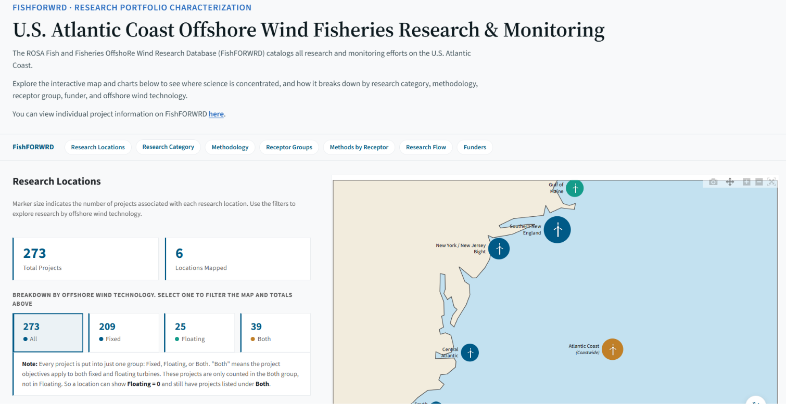

Research Portfolio Characterization
Shows where offshore wind fisheries science is concentrated and how 273 projects break down. An interactive map sizes each research location by its number of projects and filters by offshore wind technology (fixed, floating or both). Tabs then cover research category, completion status, projects active each year, methodology, receptor group, a methodology × receptor group heatmap that drills into any one receptor group, a research-flow diagram, and the 46 funders by type, where selecting a type lists its funders.
The category chart can play an animation of research growing from 2012 to 2026, filtered by start year and by whether a project is part of a developer's monitoring plan. Categories, methods and receptor groups have hover definitions, and the main charts offer a "View as table" option.